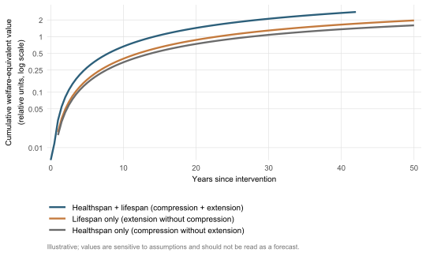

If healthy years can be bought, who pays for them, who profits and who is left out? The biology of the earlier chapters now becomes a problem in political economy — about the cost of a postponed decline, the markets that have grown up around it, and the gradients of access that will decide who lives the longer life and who watches it pass them by.
The previous chapter ended on a hinge it could not turn. Demography established the size of the bill that an ageing world must find a way to meet; whether that bill is manageable, ruinous or unequally distributed depends on quantities demography itself does not measure — the proportion of late life lived in functional capacity, the size of the financing gap between revenue and outlay, the distribution of innovation across geographies and incomes. Those are questions of economics and justice, and they are the subject of these pages. The order of the argument moves outward in scope. The first section asks what the economic value of a postponed decline would be, and how confidently anyone can answer; the second turns from the value to the market that has grown to capture it; the third asks how, country by country, the bill might actually be paid; the fourth asks who gets the postponement and who does not. The register shifts accordingly. The evidence is no longer the randomised trial but the long-range projection, the microsimulation, the cross-country comparison — each with a discipline of uncertainty that demands honesty about what the numbers can and cannot show.
A note on the status of figures in this chapter. Where earlier chapters dealt in measured effects, this one deals largely in modelled futures. Some of the central numbers — the trillion-dollar dividend, the financing gap at 2060, the disability-driven expenditure projection for 2070 — are produced by models whose inputs are themselves uncertain, and they are best read as the shape of a possibility rather than the size of an outcome. They are quoted because they discipline the conversation, not because they settle it.
13.1 The economic case: dividends, gains and what the numbers cannot show
The phrase longevity dividend entered the literature in 2006, in a short and now-famous proposal by Olshansky, Perry, Miller and Butler that argued for a redirection of biomedical research towards the underlying biology of ageing rather than the diseases it produces. Their case was strategic and economic at once: an intervention that delays ageing modestly, they argued, would yield greater gains in health and longevity than further effort against any single age-related disease, because it would act on the shared substrate from which those diseases emerge. The argument has since been developed in a series of microsimulation exercises whose results form the empirical backbone of any quantitative claim about the value of intervening in ageing.
The first to put a dollar figure on the proposal was the team led by Dana Goldman, who applied the Future Elderly Model — a microsimulation of the future health and spending of older Americans — to compare a hypothetical delayed-ageing scenario against optimistic disease-specific scenarios for heart disease and cancer (Goldman et al., 2013). The contrast was sharp. Targeting individual diseases yielded diminishing returns over a fifty-year horizon because of competing risks: success against one disease left people alive to die of another, with limited net gain in healthy years. Delaying ageing, by contrast, postponed the whole architecture of late-life pathology in concert, raising life expectancy by an estimated 2.2 years, most of them spent in good health, and generating an economic value of about USD 7.1 trillion over five decades. The result was not subtle, and it reframed the policy conversation by giving the case for ageing research a number that was, for the first time, of the same order as the numbers attached to the largest disease-specific research programmes.
A more recent line of work has extended the exercise from the United States to the whole world and from the disease-comparison frame to a direct valuation of how much an additional year of healthy life would be worth in aggregate welfare. Scott, Ellison and Sinclair, drawing on the welfare-economic framework of the value of statistical life, computed that a slowdown in ageing that increases life expectancy by one year is worth approximately USD 38 trillion at present prices, with a corresponding figure of USD 367 trillion for ten years (Scott et al., 2021). A follow-up extending the framework internationally and to a per-country basis yielded a more compact summary number: increasing life expectancy by one year carries an annual benefit on the order of four to five per cent of GDP, with the gain rising as life expectancy itself rises and as the share of older people grows (Scott et al., 2023). The economic intuition behind the number is simple. Health gains and life-expectancy gains are complementary, because longer life is more valuable if its years are healthy and healthy years are more valuable if there are more of them. Targeting ageing exploits both complementarities at once, where targeting a single disease exploits at most one of them.
How seriously should these figures be taken? The answer requires a careful separation of what the numbers say from what they assume. The trillion-dollar valuations are not forecasts of GDP increments that would actually be observed if a successful geroprotective therapy entered routine use; they are the present-discounted value of a population-wide gain in welfare expressed in a monetary metric, computed under specific assumptions about the value of a statistical life, the rate of time preference, the additivity of disease risks and the magnitude of the slowdown in ageing. Different assumptions yield different numbers, sometimes by an order of magnitude. The figures are best understood as the answer to a counterfactual question — what would the welfare gain be worth, in money, if a particular slowdown could be achieved? — rather than as a prediction of revenue. They discipline the conversation by anchoring it in a common unit; they do not settle it.
A second cautionary note comes from the demography itself. The same Olshansky who first proposed the dividend recently argued, with co-authors, that improvements in life expectancy in the longest-lived national populations have decelerated since 1990, and that radical extension of the human maximum lifespan within the present century is implausible without an intervention on the biology of ageing of a kind not yet demonstrated (Olshansky et al., 2024). The dividend, in other words, is a counterfactual on a counterfactual: it values a slowdown that has not occurred, conditional on its occurrence. The numbers tell us what is at stake if the biology of Parts I–IV one day delivers a genuine slowdown; they do not tell us whether it will, or how soon. The honest summary is that the economic case for investing in ageing research is enormous if the biology cooperates, and the size of the prize is itself an argument for the investment; but the dividend remains a hypothesis whose magnitude is well characterised and whose realisation is not.
Figure 13.1 illustrates the analytic geometry behind these figures. It is not a forecast.
Code
library(ggplot2)t<-seq(0, 50, by =0.5)both<-1.0*(1-exp(-0.085*t))^1.4*(1+0.045*t)life<-1.0*(1-exp(-0.060*t))^1.4*(1+0.022*t)health<-1.0*(1-exp(-0.055*t))^1.4*(1+0.015*t)# Etiquetas SIN \n: una línea por entrada, separación mediante key.heightlvls<-c("Healthspan + lifespan (compression + extension)","Lifespan only (extension without compression)","Healthspan only (compression without extension)")d<-rbind(data.frame(t =t, v =both, scenario =lvls[1]),data.frame(t =t, v =life, scenario =lvls[2]),data.frame(t =t, v =health, scenario =lvls[3]))d$scenario<-factor(d$scenario, levels =lvls)palette_book<-c("Healthspan + lifespan (compression + extension)"="#2c5f7a","Lifespan only (extension without compression)"="#c47a3d","Healthspan only (compression without extension)"="#6b6b6b")y_breaks<-c(0.01, 0.05, 0.10, 0.25, 0.50, 1.00, 2.00)ggplot(d, aes(x =t, y =v, colour =scenario))+geom_line(linewidth =1.1)+scale_colour_manual( values =palette_book, guide =guide_legend( ncol =1, byrow =TRUE, keywidth =unit(1.8, "lines"), keyheight =unit(1.0, "lines")))+scale_y_log10( breaks =y_breaks, labels =as.character(y_breaks), limits =c(0.008, 2.8))+scale_x_continuous( breaks =seq(0, 50, by =10), limits =c(0, 50), expand =expansion(mult =c(0.01, 0.02)))+labs( x ="Years since intervention", y ="Cumulative welfare-equivalent value\n(relative units, log scale)", colour =NULL, caption ="Illustrative; values are sensitive to assumptions and should not be read as a forecast.")+theme_minimal(base_size =12)+theme( panel.grid.minor =element_blank(), panel.grid.major.x =element_line(colour ="grey88", linewidth =0.3), panel.grid.major.y =element_line(colour ="grey88", linewidth =0.3), legend.position ="bottom", legend.direction ="vertical", legend.justification ="left", legend.margin =margin(t =10, b =4), legend.spacing.y =unit(6, "pt"), # <-- separación clave entre entradas legend.text =element_text(size =10), legend.key.height =unit(1.6, "lines"), # <-- altura generosa por entrada axis.title.y =element_text(size =10, lineheight =1.3), axis.title.x =element_text(size =10), axis.text =element_text(size =9.5), plot.caption =element_text(size =8.5, colour ="grey45", hjust =0, margin =margin(t =6)))

Figure 13.1: Three trajectories of the longevity dividend, illustrative. Each curve shows cumulative welfare-equivalent value (relative units, log-scale, present-discounted) under a stylised slowdown in ageing of varying composition. The blue curve assumes a slowdown that compresses morbidity while extending life modestly; the orange curve assumes pure lifespan extension without compression; the grey curve assumes healthspan compression without lifespan extension. The figure illustrates the welfare-economic intuition of Scott et al. (2021) and Scott et al. (2023) that the largest gains arise from the combination rather than either component alone. Units are arbitrary; curves are sensitive to assumptions about the value of statistical life, the discount rate and the magnitude of the slowdown, and should not be read as a forecast.
NoteReading the dividend figures
The trillion-dollar numbers are best read as anchoring devices rather than as forecasts. They quantify the welfare gain that would accompany a postponement of ageing of a specified magnitude, expressed in a monetary unit so it can be compared with public health interventions denominated the same way. They depend on the value of statistical life used (typically calibrated to revealed willingness-to-pay studies), the discount rate (typically three per cent), the assumed slowdown (typically one to ten years of additional life expectancy) and the assumed composition of the additional years (healthy or not). Changing any of these inputs changes the numbers, sometimes by orders of magnitude. What does not change is the qualitative ordering: targeting ageing dominates disease-specific approaches because it exploits the complementarity between healthspan and lifespan; the value of additional years rises with the share of those years lived in health.
13.2 Markets, capital and the longevity hype cycle
A dividend that large will not be left uncontested in the marketplace, and the longevity industry that has grown up around the prospect has now reached a scale at which it has begun to influence the direction of research rather than merely to follow it. By 2024, total private investment in the longevity sector had reached approximately USD 8.5 billion across some 330 disclosed deals, dominated by a small number of capital-intensive bets on cellular reprogramming and discovery platforms (Lyu et al., 2024). The largest of these — Altos Labs, launched in 2022 with an initial funding round on the order of USD 3 billion to develop partial reprogramming as a therapeutic strategy — exceeded in a single round the cumulative public budget for ageing research at most national funding agencies. Calico Life Sciences (founded by Alphabet in 2013), Retro Biosciences, BioAge Labs, NewLimit, Loyal and dozens of others occupy the same crowded space, each with a thesis about which hallmark or which intervention will be the entry point to a usable geroprotector.
The capital is not arriving into a domain free of patterns from the past. The longevity sector is the latest in a recognisable sequence of biomedical waves, each of which has followed a similar trajectory: an initial scientific opening, a phase in which the science is generalised into a therapeutic prospectus, a period of expansive funding and headline valuations, a partial disappointment as the trajectory from mechanism to clinic turns out to be harder than the prospectus implied, and a consolidation phase in which the surviving programmes recover proportion (Ringel & al., 2025). Developmental biology, somatic stem cells, telomere biology and telomerase activators, antioxidants, NAD⁺ precursors, senolytics, epigenetic clocks and partial reprogramming have each occupied the high-expectation phase of this cycle in turn, with the more recent additions — incretin-based metabolic agents repurposed for healthy ageing — currently at its peak. Chapter 11 traced the scientific anatomy of two of these episodes (the antioxidant collapse and the taurine controversy), and the underlying structure recurs almost without alteration in the economic data: a wave of investment crests when the science is publicly comprehensible and emotionally compelling, and recedes when the trial endpoints take longer to read out than the financing horizons of the investors (Boekstein & al., 2023).
The pattern matters for two reasons. The first is internal to the science. The direction of research is shaped, increasingly, by what capital is willing to fund rather than by what the wider geroscience community would identify as the most consequential open questions (Lyu et al., 2024). Targets that are visually compelling, mechanistically distinctive and consistent with the founding thesis of a billion-dollar firm receive disproportionate investment; targets that are equally promising but harder to commercialise — public-health interventions on physical activity, sleep and social engagement, or open-source biomarker platforms whose value lies in their commons character — receive less. The Future Elderly modelling of Goldman and colleagues argued that the largest welfare returns come from targeting ageing itself rather than its diseases; the actual portfolio of the industry trends in the opposite direction, towards single-disease applications of broad-spectrum interventions because that is where the regulatory pathway is shorter and the exit valuation more legible.
The second reason is external. The cycle of expectation has a price. Each wave that overstates its near-term prospects produces a counter-wave of public disillusion that can damage not only the firms involved but the wider scientific enterprise on which all subsequent waves draw. The antioxidant case examined earlier is the most thoroughgoing example: a decade of promotional claims about supplementation as a strategy against ageing was followed by the meta-analytic finding of no benefit and possible harm, and by a public scepticism that has spilt over into other areas of the field (Bjelakovic et al., 2007). The taurine controversy of 2023–25 followed a compressed version of the same arc within twenty-four months (Marcangeli et al., 2025; Singh et al., 2023). The senolytic field, though still in active clinical investigation, has had its early bullish narrative tempered by trials in which proof-of-mechanism in mouse models did not translate cleanly into late-life human outcomes. The incretin agonists, now riding the highest curve of expectation in metabolic medicine, will sooner or later face the same scrutiny.
The structural lesson is that the markets do not correct themselves on the relevant timescale. The therapy whose readout depends on extending healthy life by several years is not a candidate for a venture-capital exit horizon of five to seven years, and the misalignment of timescales is among the chronic distortions of the longevity industry. The valuations cluster around therapies promising legibly measurable changes — a biomarker shift, a frailty score improvement, a near-term morbidity endpoint — rather than the long-horizon trials examined in Chapter 10. This is not a fault of any individual firm; it is the architecture of how risk-bearing capital allocates resources, and it produces a systematic preference for the legible over the consequential.
The role of a small number of very wealthy individuals deserves a separate mention. The presence in this market of figures with personal fortunes adequate to absorb the failure of an entire generation of clinical trials — and with stated personal interests in their own longevity — has changed the funding dynamic in a way that has no parallel in other medical fields. The paradigm case is the disclosure that the entire USD 180-million seed round of Retro Biosciences was provided by a single individual, Sam Altman, an investment of a scale that previous biotech history offers no precedent for and which sits beside comparable single-source rounds for Altos Labs and a handful of others (Regalado, 2023). Whether this concentration is a problem depends on one’s view of the relationship between private wealth and the direction of biomedical research. Defenders argue that the willingness of such investors to fund science with longer horizons than the public capital markets will tolerate is precisely what allows the more speculative parts of the field to exist at all; that the capacity to absorb the failure of a decade of trials is a real public good in a domain whose timescales the venture-capital industry is otherwise structurally unsuited to. Critics observe that the resulting concentration of agenda-setting power in a small group of individuals with peculiar incentives is itself a distortion of the kind that the wider literature on health-research priorities has come to flag as a source of systematic bias: the recent editorial review in Frontiers in Medicine documents the divergence between predominant biomedical research agendas — shaped increasingly by commercial incentive — and the broader set of priorities a public-health perspective would identify (García Carrillo et al., 2024), and a parallel bibliometric analysis of national funding allocations finds that traditional criteria of scientific excellence systematically under-weight societal relevance and burden of disease in the actual distribution of resources (Madsen & Andersen, 2024). The deeper critique, developed in the now-substantial literature on philanthrocapitalism, holds that the integration of philanthropic and venture-capital logic in biomedicine reproduces, rather than offsets, the priorities of the funders themselves (Haydon et al., 2021). Both sides have force, and the question of which side preponderates is part of the political economy of the field. What is not in dispute is the size of the influence: a single founder’s portfolio decision can now move the longevity research agenda in ways the consensus of the relevant scientific societies cannot, and in a way that public funding bodies, with their slower decision cycles and broader accountability, cannot easily counterbalance.
TipHype cycles compared
Patterns of overshoot and correction in the longevity sector have been remarkably consistent. The antioxidant cycle (peak 1995, correction 2007), the telomerase-activator cycle (peak 2010, correction mid-2010s), the NAD⁺-precursor cycle (peak 2018, correction ongoing), the senolytic cycle (peak 2019, recalibration in progress), the partial-reprogramming cycle (peak 2022, narrative still ascendant) and the GLP-1-as-geroprotector cycle (peak 2025, well below the readout horizon) each follow the same architecture of announcement, expansion and partial retraction. The pattern is not a moral failing of the field. It has been characterised from within the geroscience community itself: a recent commentary in EMBO Reports describes the current phase as a premature shift of focus away from the underlying biology of ageing and towards translation into commercialisable interventions, with the optimism of the private sector running well ahead of the state of the basic science (Gems et al., 2024). A separate consensus document in Nature Aging, drafted by a working group that includes representatives from several of the major longevity firms alongside academic researchers, documents the same gap from the technical side: the principal barriers to clinical translation are not the absence of preclinical signal but the absence of biomarkers robust enough at the level of the individual to support intervention decisions on the timescales the funding environment expects (Herzog et al., 2024). The architecture, on both readings, is the predictable consequence of a mismatch between the timescale of the underlying biology and the timescale of the capital that funds it.
13.3 Financing the bill: sustainability, pensions and the gap to be paid
The question of who pays the bill of an ageing society is often framed as a question about the inevitability of fiscal crisis, and it is therefore worth beginning with the central finding of the institutional literature on the subject, which contradicts that framing. The Population Ageing Financial Sustainability Gap for Health Systems simulator developed by the World Health Organization and the European Observatory on Health Systems and Policies — known by the acronym PASH — was constructed precisely to test the assumption that population ageing will of itself produce an unsustainable expansion of health expenditure (Europe, 2025). Its conclusion, replicated across the country scenarios for which the simulator has been run, is that the effect of ageing on health-system sustainability depends much more on policy choices about revenue raising, coverage design and the unit cost of services than on the changing age structure of the population itself. The financing gap is real; it is not, however, a demographic destiny.
The point is made concrete in a recent simulation of five European countries — Bulgaria, Italy, Slovakia, Slovenia and Spain — out to 2060, using the PASH framework (Cylus et al., 2026). All five countries are projected to face significant health-financing gaps as their populations age, but the size of the gap and its consequences for households vary substantially with the underlying revenue mix and the protection rules in place. Where revenue depends heavily on payroll taxes paid by the shrinking working-age population, the gap widens fastest; where the revenue base is broader, it widens more slowly. Where coverage limits and co-payment structures are generous, the gap is absorbed by the public budget; where they are tight, the gap is pushed onto households as out-of-pocket spending, with the risks of catastrophic and impoverishing health expenditure that out-of-pocket reliance entails. The simulation models these flows explicitly, and the result is the unsurprising but politically uncomfortable finding that countries with similar demographic profiles can face very different distributions of financial hardship depending on how their health systems are designed.
Table 13.1 shows the headline numbers from the five-country exercise.
Table 13.1: Projected health-financing gaps and household exposure in five European countries to 2060, summarised from the PASH simulator. The exact magnitude in each country is sensitive to assumptions about productivity growth, immigration and unit cost trends; the ordering and the mechanism through which the gap reaches households is the robust feature of the analysis (Cylus et al., 2026; Europe, 2025).
Country
Projected health-financing gap by 2060
Expected route of household exposure
Reference
Bulgaria
Large, driven by narrow revenue base and high co-payment reliance
Catastrophic out-of-pocket spending concentrated in lower deciles
The implications for households are the second part of the story, and they are best read at two scales at once. At the macroeconomic scale, the OECD’s recurrent assessment of the public health expenditure trajectory in member countries projects average growth of about 2.6 per cent per year over the period 2019–2040, with public health spending rising to roughly 8.6 per cent of GDP — an increase of nearly two percentage points over a generation, with substantial variation across countries (OECD, 2025a). A more recent integrated analysis projects that the disability-driven component of public expenditure in the European Union could rise by as much as 2.7 per cent of GDP per year by 2070 in the absence of compensating mechanisms, principally slower biological ageing or sustained net immigration (Freitas & Malva, 2025). At the microeconomic scale, the gap shows up not as a budget-line item but as a transfer of cost to the older household, in the form of co-payments, private complementary insurance and the privately financed share of long-term care.
This last element — long-term care — is the largest and least studied component of the bill, and the one in which the gap between need and provision is widest. The recent scoping review of long-term care financing innovations across high- and middle-income countries documents both the breadth of policy experimentation under way and the limits of any approach that does not begin from the question of how the burden is shared between the household, the private market and the public budget (Macdonald et al., 2024). Where mandatory long-term care insurance has been introduced and adequately funded — as in Germany, Japan and a handful of other countries — coverage has broadened, out-of-pocket exposure has fallen and the policy has supported the broader objective of ageing in place. Where coverage has been left to the private market or to the residual capacity of households, the result has been a regressive financing of late-life care in which the worst-off pay the largest fraction of their income.
The third element — pensions — has received the most policy attention of the three, and is the most thoroughly modelled. The OECD’s biennial Pensions Outlook for 2024 reviews the design responses available to systems facing the longevity risk introduced by rising life expectancy: enlarging the contribution base, raising the statutory retirement age, indexing benefits to longevity, diversifying revenue mixes between public and asset-backed pillars, and developing the payout-phase products that allow accumulated wealth to last across a longer drawdown (OECD, 2024). None of these levers is without cost. Raising the retirement age depends on those additional years being healthy, and so depends on precisely the compression of morbidity that the biology of the earlier chapters has not yet delivered. Indexation to longevity transfers risk from public budgets to individuals. Asset-backed pillars require investment infrastructure that not all countries possess. The point of the Outlook is that the choices are real and consequential, not that any of them is sufficient.
These three threads — health systems, long-term care, pensions — interact, and the interactions are usually amplifying rather than offsetting. A country whose health system pushes long-term care onto households increases the volume of family caregiving, which reduces the labour-force participation of the family carers (overwhelmingly women), which narrows the contribution base from which pensions and health insurance are financed, which tightens the constraint on the public budget, which deepens the pressure to push more care onto households. The recent microsimulation of informal family caregiving across Europe to 2050 quantifies the scale of this loop directly: the burden of informal care is projected to grow substantially over the next quarter-century in nearly every country examined, with the steepest increases in those whose formal long-term care systems are least developed (Cattaneo et al., 2025). The same dynamic, mediated through the household, links the macro-fiscal story to the gendered story of the chapter’s final section.
A clarifying observation closes the section. The framing of an ageing world as facing an inevitable fiscal crisis is widespread, intuitive and substantially incorrect. The framing of an ageing world as facing a choice between coordinated policy adjustment and a slow shift of unmanaged costs onto households is correct, supported by the comparative evidence and harder to act on. The PASH framework, the Future Elderly Model, the OECD pension projections and the long-term care literature all converge on the same conclusion: the size of the bill is real but variable, and the distribution of the cost is decided by policy rather than by demography. The choice is open. What is fixed is the schedule on which it must be made.
13.4 Access and the architecture of inequality
The economic question of who pays leads almost inevitably to the question of who benefits, and it is in the answer to the second question that the political economy of longevity becomes hardest. Whatever the geroprotective therapies of the coming decades turn out to be, they will arrive into a world whose distribution of health is already among the most unequal that has ever been measured, and whose institutions for redistributing health goods are weakest precisely where the need is greatest. Four gradients of inequality bear on the question, and they are connected.
The first is the gradient between countries. The World Health Organization’s most recent estimates of healthy life expectancy at birth, drawn from the Global Burden of Disease analysis for 2021, range from approximately 73.6 years in Singapore at the top of the world distribution to approximately 44.6 years in Lesotho at the bottom, with a similar ranking obtaining for healthy life expectancy at age sixty: in the European region, an average of about 18 healthy years remain to a person reaching sixty; in the African region, around 13 (World Health Organization, 2024). The gap of roughly 29 years between the top and bottom of the world distribution is among the largest in any global health indicator; it is the disparity into which any new geroprotective therapy will be released. Recent regional reviews underline how unevenly even the post-pandemic recovery in healthy life expectancy has been distributed: the Region of the Americas has seen healthy life expectancy at age sixty fall from about 16.6 years in 2019 to about 15.2 years in 2021, a reversal of roughly a decade of progress in a single demographic shock (Pan American Health Organization / WHO Regional Office for the Americas, 2024).
The second gradient runs within countries, between rural and urban populations. The most recent integrated review for Europe documents the pattern clearly: rural areas typically have higher old-age dependency ratios, lower density of essential services and significantly lower access to specialist care than their urban counterparts in the same country, with the result that the experience of late life can differ more sharply between two villages in the same country than between two capital cities at opposite ends of the continent (OECD/European Union, 2024). The OECD’s recent analysis of community-based care extends the point: public and for-profit providers tend to cluster in urban areas where population density makes operations economically attractive, while the social-economy sector has emerged as the principal provider of home-based care in many rural settings, often filling a gap that the formal health system has left to it (OECD, 2025b). The implication for any new geroprotective intervention is straightforward: even within a country with universal coverage and a uniform regulatory environment, the rural older population will encounter the technology later, at higher private cost and through thinner referral networks, than the urban population of the same age.
The third gradient is intra-household, and it falls overwhelmingly along the lines of gender. The work of caring for an older household member — administering medication, coordinating appointments, providing assistance with the activities of daily living, supervising chronic conditions — is performed in most of the world by women, who absorb the time, the lost earnings, the foregone pension contributions and the health consequences of the role. The recent quantification of care life expectancy — the number of years a person of given age and sex can expect to spend providing unpaid care to an older relative — shows the gender gap to be substantial in every country in which it has been measured, with women in the EU spending several more years on average in the caring role than men of the same age (Ophir & Polos, 2021). A microsimulation of informal family caregiving in Europe to 2050 projects that this burden will grow substantially over the next quarter-century, with the steepest increases in countries whose formal long-term care systems are least developed (Cattaneo et al., 2025). The two findings together imply a connection that is rarely made explicit in the longevity literature: the household-level cost of an ageing society is not gender-neutral, and any policy framework that treats it as such will underestimate the price and misallocate the burden.
The fourth gradient is technological, and it cuts across the others in a way that could either widen or narrow them. The same digital and assistive technologies that promise to keep older people independent for longer — remote monitoring of chronic conditions, tele-consultations with specialists, ambient sensors and assistive robotics, automated medication management, home-adapted environments — are themselves unevenly distributed, and tend to reach the urban, the well-educated and the high-income before the rural, the elderly and the low-income (OECD, 2025b). The technological gradient is the only one of the four that is in principle reversible by policy on a short timescale, since the marginal cost of extending most digital services to additional users is low; whether it will be reversed in practice depends on whether countries treat digital connectivity and assistive technology for older people as a public good or as a consumer product. The history of comparable transitions — broadband access, mobile health, telemedicine after the pandemic — suggests both outcomes are possible.
Figure 13.2 displays the first of these gradients — the country-level distribution of healthy life expectancy — at the global scale.
Figure 13.2: Healthy life expectancy (HALE) at birth, selected countries, 2021. Each bar is one country; bars are ordered from highest to lowest HALE. The 29-year gap between the top of the distribution and the bottom is among the largest in any global health indicator. Source: WHO Global Health Observatory (World Health Organization, 2024); values are derived from the Global Burden of Disease 2021 study and use Sullivan’s method to combine mortality and disability data into a single summary measure.
What does this geography of unequal health imply about the access question? Three observations carry most of the weight. The first is that the gradient is so large that it cannot be closed in a single generation by any technology that has yet been proposed; even a successful geroprotector that adds five healthy years would, applied uniformly, leave the gap at twenty-four. The second is that the gradient is not a static feature of the world but the product of distributions that are themselves shaped by policy — income, education, public health infrastructure, healthcare financing — and which have been moved before, sometimes substantially, when sustained effort has been applied. The third is that a new geroprotective technology, introduced into a world with the present distribution, will not by default reduce the gradient and may widen it: technologies that require an existing infrastructure for diagnostic biomarkers, clinical monitoring and follow-up will reach those who already have such infrastructure first, and will reach those who do not last or not at all.
The normative response to these facts has a long literature behind it. The framework with which philosophers most often approach the question is Norman Daniels’s prudential lifespan account, developed in Just Health, which reformulates intergenerational equity not as a competition between age groups for scarce resources but as the question a prudent planner would ask if they were uncertain which generation they would belong to (Daniels, 2008). Behind the device sits a Rawlsian principle: an institution’s distribution of health goods across the life course is just to the extent that a person, choosing in advance of knowing which stage of life they would be at, would consent to it. The account is best read as a discipline on the framing of the problem rather than a derivation of a particular distribution: it forces an explicit recognition that any policy on geroprotective access affects not one cohort but the trajectory of all future older selves, and that the planner’s own future older self has an interest in the outcome as well. Applied to the question at hand, the prudential lifespan view yields neither the libertarian conclusion that geroprotection should be a market good nor the egalitarian conclusion that it must be distributed equally on day one, but a more specific requirement: that the institutions which determine access be designed to be acceptable from any position one might occupy along the life course, and that the gradient between the best and worst positions be no wider than a prudent planner would tolerate from behind the relevant veil. That requirement is hard to operationalise. It is also hard to dismiss.
ImportantAnalogy — the cathedral and the queue
A cathedral is built across generations: the people who quarry the stone are not the people who will pray in the finished nave. To plan such a project well, the masons must take seriously the interests of the worshippers who will use the building, even though those worshippers do not yet exist. A pension scheme works the same way. A geroprotective therapy works the same way. The institutions that decide who gets the postponed decline of late life are deciding it for a queue of future older selves who do not yet have a vote — and on whose behalf the planners must reason as if from the queue rather than from the front of it. That is the prudential lifespan view in a sentence, and it is the discipline against which the politics of access ought to be tested.
The economic frame settles two things and unsettles a third. It settles that the welfare value of intervening in ageing, if intervention proves possible, is on the same order of magnitude as the largest health-policy gains of the past century. It settles that the financing of an ageing society is a matter of policy choice rather than demographic destiny. It unsettles the question that has run beneath the chapter from the start: whether the intervention itself, considered as a project for the human species and not only for the household budget, is wise to undertake. The economic case for the dividend says nothing about whether longer late lives are good lives, nor about whose conception of the good ought to count when the institutions of an ageing world decide what to fund. Those are questions of ethics. They are the subject of the next chapter.
Bjelakovic, G., Nikolova, D., Gluud, L. L., Simonetti, R. G., & Gluud, C. (2007). Mortality in randomized trials of antioxidant supplements for primary and secondary prevention: Systematic review and meta-analysis. JAMA, 297(8), 842–857. https://doi.org/10.1001/jama.297.8.842
Cattaneo, A., Vitali, A., Regazzoni, D., & Rizzi, C. (2025). The burden of informal family caregiving in Europe, 2000–2050: A microsimulation modelling study. The Lancet Regional Health — Europe, 53, 101295. https://doi.org/10.1016/j.lanepe.2025.101295
Cylus, J., Thomson, S., Serrano Gregori, M., Gallardo Martínez, M., Garcia-Ramirez, J. A., & Evetovits, T. (2026). Health financing and population ageing: Evidence on the links between financial sustainability and financial hardship from the PASH simulator. Health Policy, 169, 105617. https://doi.org/10.1016/j.healthpol.2026.105617
Europe, W. H. O. R. O. for. (2025). How does population ageing affect health system financial sustainability and affordable access to health care in europe? (PASH simulator brief). https://www.who.int/europe/publications/i/item/9789289061810
Freitas, H. R., & Malva, J. O. (2025). Getting ahead of the ageing curve: Learning from EU experiences for a healthier demographic transition. Frontiers in Public Health, 13, 1678040. https://doi.org/10.3389/fpubh.2025.1678040
García Carrillo, M., Gagnon, M.-A., & Blaustein, M. (2024). Editorial: Current priorities in health research agendas: Tensions between public and commercial interests in prioritizing biomedical, social, and environmental aspects of health. Frontiers in Medicine, 11, 1391982. https://doi.org/10.3389/fmed.2024.1391982
Gems, D., Okholm, S., & Lemoine, M. (2024). Inflated expectations: The strange craze for translational research on aging. EMBO Reports, 25(9), 3748–3752. https://doi.org/10.1038/s44319-024-00226-2
Goldman, D. P., Cutler, D., Rowe, J. W., Michaud, P.-C., Sullivan, J., Peneva, D., & Olshansky, S. J. (2013). Substantial health and economic returns from delayed aging may warrant a new focus for medical research. Health Affairs (Project Hope), 32(10), 1698–1705. https://doi.org/10.1377/hlthaff.2013.0052
Haydon, S., Jung, T., & Russell, S. (2021). ‘You’ve been framed’: A critical review of academic discourse on philanthrocapitalism. International Journal of Management Reviews, 23(3), 353–375. https://doi.org/10.1111/ijmr.12255
Herzog, C. M. S., Goeminne, L. J. E., Poganik, J. R., Barzilai, N., Belsky, D. W., Betts-LaCroix, J., Chen, B. H., Chen, M., Cohen, A. A., Cummings, S. R., Fedichev, P. O., Ferrucci, L., Fleming, A., Fortney, K., Furman, D., Gorbunova, V., Higgins-Chen, A., Hood, L., Horvath, S., … Gladyshev, V. N. (2024). Challenges and recommendations for the translation of biomarkers of aging. Nature Aging, 4(10), 1372–1383. https://doi.org/10.1038/s43587-024-00683-3
Lyu, Y.-X., Fu, Q., Wilczok, D., Ying, K., King, A., Antebi, A., Vojta, A., Stolzing, A., Moskalev, A., Maier, A. B., Olsen, A., Groth, A., Simon, A. K., Brunet, A., Pedersen, B. K., Schumacher, B., Kennedy, B., Murphy, C. T., Ewald, C. Y., … Bakula, D. (2024). Longevity biotechnology: Bridging AI, biomarkers, geroscience and clinical applications for healthy longevity. Aging (Albany NY), 16(20), 12955–12976. https://doi.org/10.18632/aging.206135
Macdonald, M., Weeks, L. E., Langman, E., & al., et. (2024). Recent innovations in long-term care coverage and financing: A rapid scoping review. BMJ Open, 14. https://doi.org/10.1136/bmjopen-2023-077309
Madsen, E. B., & Andersen, J. P. (2024). Funding priorities and health outcomes in Danish medical research. Social Science & Medicine, 360, 117347. https://doi.org/10.1016/j.socscimed.2024.117347
Marcangeli, V., Cefis, M., Hammad, R., Granet, J., Leduc-Gaudet, J.-P., Gaudreau, P., Aubertin-Leheudre, M., Bélanger, M., Robitaille, R., Morais, J. A., & Gouspillou, G. (2025). Experimental evidence against taurine deficiency as a driver of aging in humans. Aging Cell, 24(10), e70191. https://doi.org/10.1111/acel.70191
OECD. (2024). OECD pensions outlook 2024: Improving asset-backed pensions for better retirement outcomes and more resilient pension systems. OECD Publishing. https://doi.org/10.1787/51510909-en
OECD/European Union. (2024). Health at a glance: Europe 2024 — state of health in the EU cycle. OECD Publishing. https://doi.org/10.1787/b3704e14-en
Olshansky, S. J., Willcox, B. J., Demetrius, L., & Beltrán-Sánchez, H. (2024). Implausibility of radical life extension in humans in the twenty-first century. Nature Aging, 4(11), 1635–1642. https://doi.org/10.1038/s43587-024-00702-3
Ophir, A., & Polos, J. (2021). Care LifeExpectancy: Gender and unpaid work in the context of population aging. Population Research and Policy Review, 41(1), 197–227. https://doi.org/10.1007/s11113-021-09640-z
Ringel, M. S., & al., et. (2025). Accelerating activity in the longevity biopharmaceutical sector. Nature Aging, 5(12), 2357–2358. https://doi.org/10.1038/s43587-025-00983-2
Scott, A. J., Ashwin, J., Ellison, M., & Sinclair, D. A. (2023). International gains to achieving healthy longevity. Cold Spring Harbor Perspectives in Medicine, 13(2), a041202. https://doi.org/10.1101/cshperspect.a041202
Singh, P., Gollapalli, K., Mangiola, S., Schranner, D., Yusuf, M. A., Chamoli, M., Shi, S. L., Lopes Bastos, B., Nair, T., Riermeier, A., Vayndorf, E. M., Wu, J. Z., Nilakhe, A., Nguyen, C. Q., Muir, M., Kiflezghi, M. G., Foulger, A., Junker, A., Devine, J., … Yadav, V. K. (2023). Taurine deficiency as a driver of aging. Science, 380(6649), eabn9257. https://doi.org/10.1126/science.abn9257
World Health Organization. (2024). Global Health Observatory indicator: Healthy life expectancy (HALE) at birth and at age 60, 2021. Online dataset, Global Burden of Disease 2021 inputs. https://data.who.int/dashboards/global-progress/hale